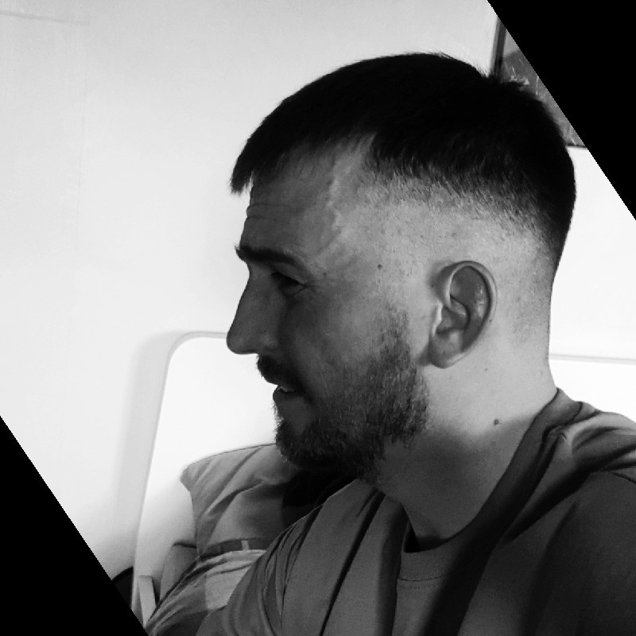

David's Portfolio

Summary
Self-taught full stack developer transitioning from 11 years at Vauxhall to tech, focusing on scalable, automation-driven solutions. Currently building tools that integrate AI and web development to solve real-world problems, with a goal to launch income-generating digital products.
Education
Vauxhall Motors
Barnfield College
NVQ - Graphic Design
Sep 04 - Sep 06
Work Experience
Stellantis
Repair Technician Team Leader (Body Shop)
Aug 2022 - Present
Experienced Metal Finisher and Team Leader with over a decade in vehicle body repair, structural alignment, and full panel replacements. Worked across Vauxhall, Peugeot (PSA), and Stellantis models, ensuring all repairs meet OEM standards, safety regulations, and quality expectations.
Currently managing a team of six, focusing on training, efficiency, and high-precision repairs. Skilled in full panel replacements, dent removal, welding, and chassis realignment, delivering factory-standard results.
Key Achievements:
- a six-person team, improving workflow and productivity.
- Specialized in full panel replacements on Vauxhall Vivaro X83 models, a skill later phased out.
- Adapted to Stellantis manufacturing changes, working across different X82 Vivaro models and facelifts.
- Trained apprentices, developing them into skilled professionals.
- Maintained 100 percent compliance with health and safety standards.
Proud of the work I do, always looking to refine processes, train the next generation, and ensure vehicles meet the highest industry standards. Open to networking and industry discussions.
Skills
- Team Leadership & Training
- Metal Fininshing & Structural Repairs
- Welding & Fabrication
- Quality Control & Workshop Efficiency
- Health & Safety Compliance (COSHH, PPE, Risk Assessments)
- Problem-Solving & Process Optimization
Awards, Certificates, or Other Acheivements
App Brewery - Full Stack
- Certificate of Completion
Other